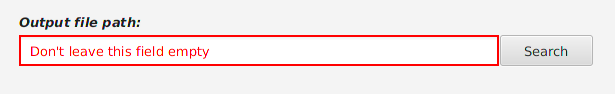
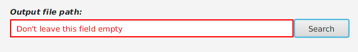
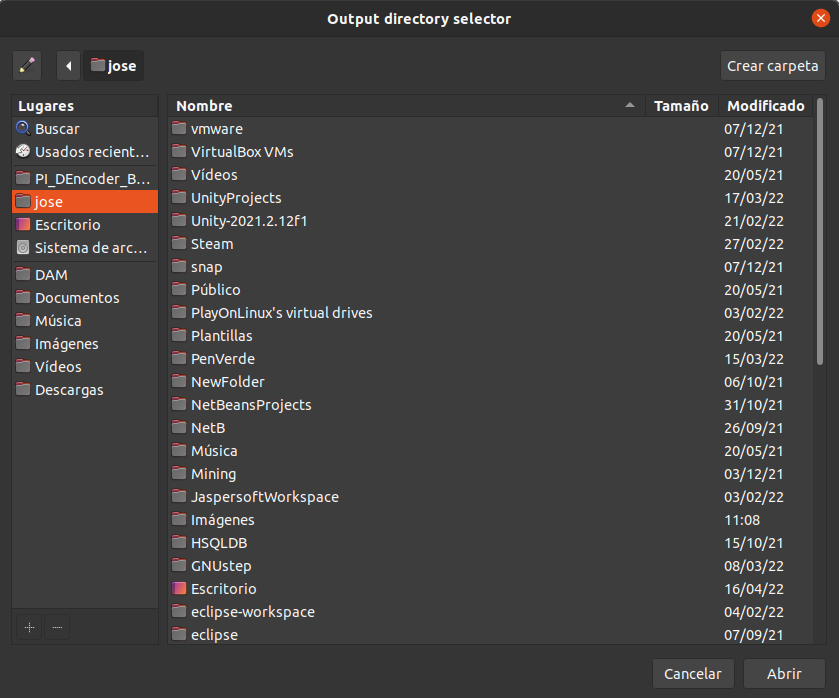
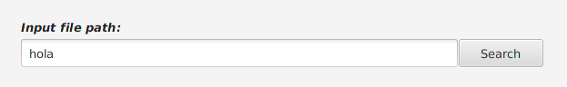
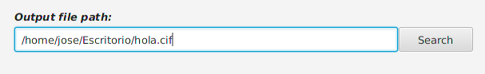
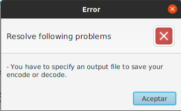

Este componente, es un componente personalizado creado para aportar usabilidad para el usuario, y que le sea fácil introducir la ruta donde se guardará el fichero resultante, el fichero cifrado o descifrado.
El campo se compone de un campo de texto, y un botón, como se puede ver en la siguiente imagen, se debe tener en cuenta que este campo no será visible hasta que no introduzcamos el fichero de entrada (el fichero a cifrar o descifrar):

Se puede introducir el fichero a cifrar o descifrar de dos formas.
Escribiendo directamente la ruta al fichero, podemos obtenerla de las siguientes formas, dependiendo de si usamos sistema operativo Windows, o Linux (distribuciones Debian):
→ SO Windows.
Otra forma de introducir el fichero es haciendo click en el botón, con lo que se desplegara un selector de directorios con el que se podrá navegar por la interfaz gráfica hasta localizar y seleccionar el directorio donde se almacenará el fichero resultante.


Introduciendo hola como fichero de entrada:

Si buscamos el directorio de salida con el botón, se auto genera el siguiente nombre para el fichero:

Casos de ERROR:
Nada más hacerse visible este componente, tendrá el recuadro en rojo, y un mensaje, también en rojo, indicando que ese campo no puede quedar vacío.
Este mensaje con el mismo estilo, podrá verse si eliminamos el contenido del campo y le quitamos el foco al componente.
En caso de dejarlo vacío, al hacer click en el botón para cifrar/descifrar, nos encontraremos con el siguiente mensaje:
